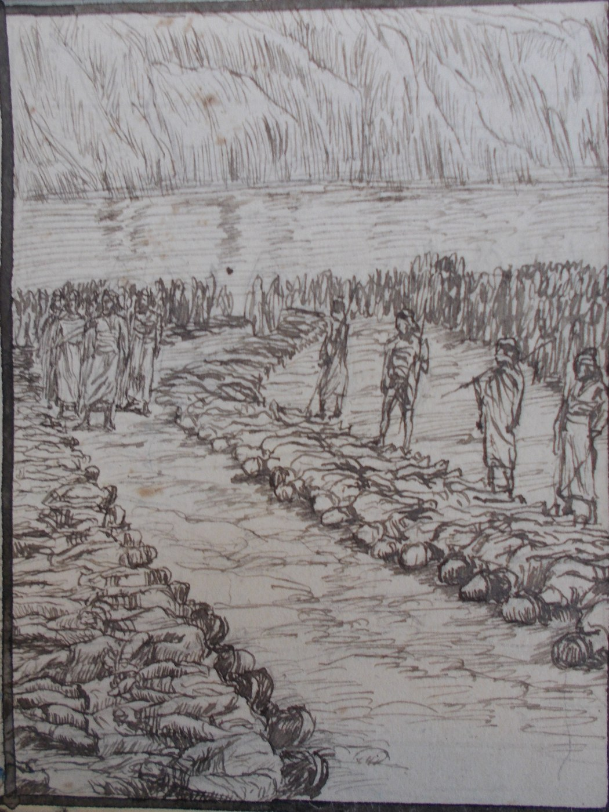

2 Samuel 8 — The Mister Translation

2 Samuel 8:2. David strikes Moab and measures them with the line, making them lie down on the ground, two lines to put to death and one full line to keep alive. This is one of Tissot’s pen sketches for his Old Testament illustrations, published after his death by Maurice Brunoff in 1904. It shows the Moabites laid out in rows and measured; the Hebrew counts lines and not persons, the Greek has two lines for life, and neither describes the scene beyond the measuring.

Translator's Notes — verse by verse
After this. “And it happened after this that David struck the Philistines and subdued them”: the Philistines last met David in the valley of Rephaim, where they were struck at Baal-perazim and from Geba to Gezer (2 Samuel 5:25, already on these pages). The first on Saul’s list of enemies, “Moab … Ammon … Edom … the kings of Zobah … the Philistines” (1 Samuel 14:47, already on these pages), is the order this chapter will follow. “Subdued” is vayyakhni’em, “made them bow down”. The ASV has “smote the Philistines, and subdued them”; the NIV “defeated the Philistines and subdued them”; the NWT 1984 “proceeded to strike the Philistines down and subdue them”; the Douay “defeated the Philistines, and brought them down”.
Metheg-ha-ammah. “And David took Metheg-ha-ammah out of the hand of the Philistines”: “Metheg-ha-ammah” stands in one verse of the Hebrew Bible. Metheg is a bridle or bit, and ammah is a cubit, or a forearm, or a conduit; the name is not understood. The Chronicles read “Gath and its towns” in its place (1 Chronicles 18:1); Gath is Goliath’s city (1 Samuel 17:4, already on these pages). The ASV has “the bridle of the mother city”; the KJV “Methegammah”; the NIV “Metheg Ammah from the control of the Philistines”; the NWT 1984 “Methʹeg-amʹmah”; the Douay “the bridle of tribute”; the Geneva “the bridle of bondage”; the TLB “by conquering Gath, their largest city”. The Greek has “the set-apart one”.
Measured with the line. “And he struck Moab, and measured them with the line, making them lie down on the ground; and he measured two lines to put to death, and one full line to keep alive”: “and measured them with the line” stands in one verse. The Hebrew counts the lines and not the people: two for death and one full line for life. The ASV has “he measured two lines to put to death, and one full line to keep alive”; the KJV “with two lines measured he to put to death, and with one full line to keep alive”; the NWT 1984 “two lines to put them to death, and a full line to preserve them alive”; the NIV “Every two lengths of them were put to death, and the third length was allowed to live”; the TLB “Two-thirds of each row, as measured with a tape, were butchered, and one-third were spared”; the Douay “he measured with two lines, one to put to death, and one to save alive”. The Greek has two lines for death and two for life. The text gives no reason for the war; David had left his father and mother with the king of Moab (1 Samuel 22:3–4, already on these pages), and the genealogy that ends in David begins with “Ruth the Moabite” (Ruth 4:10, 17, already on these pages). Balaam had seen a sceptre that “crushes the temples of Moab” (Numbers 24:17, already on these pages).
Bearers of tribute. “And Moab became servants to David, bearers of tribute”: minchah is a gift, and here a payment owed. The same two words describe Aram in verse 6. The ASV has “servants to David, and brought tribute”; the KJV “David’s servants, and brought gifts”; the NIV “subject to David and brought him tribute”; the NWT 1984 “David’s servants to carry tribute”; the Douay “was made to serve David under tribute”; the TLB “they paid him tribute each year”.
A hand turned back. “And David struck Hadadezer son of Rehob, king of Zobah, as he went to turn back his hand at the river Euphrates”: “to turn back his hand” stands in one verse. The Chronicles read “to set up his hand” (1 Chronicles 18:3), the verb that has Saul “setting up a monument for himself” (1 Samuel 15:12, already on these pages), yad being both a hand and a monument. Nor does the Hebrew say who “he” is, David or Hadadezer. The ASV has “as he went to recover his dominion at the River”; the KJV “to recover his border at the river Euphrates”; the NIV “when he went to restore his monument at the Euphrates River”; the NWT 1984 “as he was going his way to put his control back again”; the Douay “when he went to extend his dominion over the river Euphrates”; the TLB “Hadadezer had attempted to regain his power”. The kings of Zobah are on Saul’s list (1 Samuel 14:47).
Hamstrung. “And David captured from him seventeen hundred horsemen and twenty thousand men on foot; and David hamstrung all the chariot horses, but left of them enough for a hundred chariots”: “and hamstrung” (vayeaqer) stands in two verses. They are this one and the Chronicles’ parallel. The verb is the one Jehovah told Joshua to use, “you shall hamstring their horses” (Joshua 11:6, 9, already on these pages), and the law forbids the king to “multiply horses” (Deuteronomy 17:16, already on these pages); see aqar. The numbers differ: the Chronicles and the Greek have “a thousand chariots, seven thousand horsemen” (1 Chronicles 18:4). The ASV has “a thousand and seven hundred horsemen … hocked all the chariot horses”; the KJV “a thousand chariots, and seven hundred horsemen”; the NIV “a thousand of his chariots, seven thousand charioteers”; the NWT 1984 “one thousand seven hundred horsemen”; the TLB “lamed all of the chariot horses except for one hundred teams”; the Geneva “destroyed all the chariots”; the Douay “houghed all the chariot horses”. The Greek has David “paralyse” the chariots.
Aram of Damascus. “And Aram of Damascus came to help Hadadezer … And David set garrisons in Aram of Damascus; and Aram became servants to David, bearers of tribute. And Jehovah saved David wherever he went”: “garrisons” is nitsavim, “those stationed”, the word for Saul’s servants “stationed about him” (1 Samuel 22:6, already on these pages). “Wherever he went” (bekhol asher halakh) stands in four verses, verses 6 and 14 here and the two Chronicles’ parallels. It answers Jehovah’s “I was with you wherever you went” (2 Samuel 7:9, already on these pages); see yasha. The ASV has “Jehovah gave victory to David whithersoever he went”; the KJV “preserved David”; the NIV “The Lord gave David victory wherever he went”; the NWT 1984 “Jehovah continued to save David wherever he went”; the Douay “preserved David”; the Geneva “the Lord saved David wheresoever he went”.
Shields of gold, and bronze. “And David took the shields of gold that were on the servants of Hadadezer, and brought them to Jerusalem. And from Betah and from Berothai, cities of Hadadezer, King David took bronze, very much”: “the shields of gold” stands in two verses, this one and 1 Chronicles 18:7. Shelet is not certain; the Greek has “bracelets” and adds that Shishak king of Egypt took them when he went up to Jerusalem. The Chronicles have “Tibhath and Cun” for the cities and add that Solomon made the bronze sea and the pillars from this bronze (1 Chronicles 18:8); see nechoshet. The ASV has “the shields of gold that were on the servants of Hadadezer”; the NIV “the gold shields that belonged to the officers of Hadadezer”; the NWT 1984 “the circular shields of gold”; the Douay “the arms of gold”; the KJV “exceeding much brass”; the NIV “From Tebah and Berothai”.
Toi and Joram. “And Toi king of Hamath heard that David had struck all the army of Hadadezer. And Toi sent Joram his son to King David, to ask after his welfare and to bless him”: Hamath is named in the Chronicles’ account of Hadadezer’s defeat, “by Hamath” (1 Chronicles 18:3), and the reason for the embassy is given in the verse itself, “for Hadadezer was a man of wars with Toi”. The Chronicles have “Tou” and “Hadoram” (1 Chronicles 18:9–10); Joram carries Jehovah’s name, Hadoram Hadad’s. The Greek has “Thoou” and “Ieddoura”. The ASV has “to salute him, and to bless him”; the NIV “to greet him and congratulate him on his victory in battle”; the NWT 1984 “to ask him about his welfare and congratulate him”; the TLB “to congratulate him, for Hadadezer and Toi were enemies”; the Douay “to salute him, and to congratulate with him, and to return him thanks”; the Geneva “to salute him, and to rejoice with him”.
Dedicated to Jehovah. “These also King David dedicated to Jehovah, with the silver and the gold that he had dedicated from all the nations that he had subdued”: the silver, gold and vessels of bronze are to go to Jehovah, as at Jericho, “all the silver and gold, and the vessels of bronze and iron, are holy to Jehovah” (Joshua 6:19, already on these pages). The list names Aram, Moab, Ammon, the Philistines and Amalek, and then the spoil of Hadadezer. Amalek is the people of Saul’s failure (1 Samuel 15:3, already on these pages); the war with Ammon is told later (2 Samuel 10). Where the Hebrew has “Aram”, the Chronicles have “Edom” (1 Chronicles 18:11), and so does the Greek. The ASV has “of Syria, and of Moab, and of the children of Ammon”; the NIV “Edom and Moab, the Ammonites and the Philistines, and Amalek”; the NWT 1984 “from Syria and from Moʹab”; the TLB “along with the silver and gold he had taken from Syria, Moab, Ammon, the Philistines, Amalek”; the Douay “of Syria, and of Moab”.
David made a name. “And David made a name when he returned from striking Aram in the Valley of Salt — eighteen thousand”: “and David made a name” stands in one verse. Jehovah had said “I will make for you a great name” (2 Samuel 7:9) and Israel is the people God went “to set himself a name” (7:23), against Babel’s “let us make a name for ourselves” (Genesis 11:4, all already on these pages); here David is the maker. The ASV has “David gat him a name”; the NIV “David became famous”; the NWT 1984 “David proceeded to make a name”; the TLB “David became very famous”; the Douay “David also made himself a name”; the Geneva “David got a name”.
Aram or Edom. “The Valley of Salt” stands in two verses, this one and the title of Psalm 60 (Psalm 60:2), where Joab strikes “Edom in the Valley of Salt, twelve thousand”; the Chronicles give the same battle to Abishai, “eighteen thousand” of the Edomites (1 Chronicles 18:12). In the unpointed script Aram and a short spelling of Edom differ by one letter, and the versions divide. The ASV and the KJV have “the Syrians”; the NIV “eighteen thousand Edomites”; the NWT 1984 “striking down the Eʹdom·ites”; the TLB “eighteen thousand Edomites in Salt Valley”; the Douay “taking Syria in the valley of the saltpits”. The Greek has “Idumea”.
Garrisons in all Edom. “And he set garrisons in Edom; in all Edom he set garrisons, and all Edom became servants to David”: the words are those of verse 6 for Aram. Esau is Edom (Genesis 36:1), “the elder will serve the younger” (Genesis 25:23), and Isaac told Esau “you will serve your brother; but … when you break loose” (Genesis 27:40); Balaam said “Edom shall be a possession” (Numbers 24:18, all already on these pages). The Edomite Doeg is the man who struck the priests at Nob (1 Samuel 22:18, already on these pages). The NIV has “He put garrisons throughout Edom, and all the Edomites became subject to David”; the KJV “put garrisons in Edom; throughout all Edom put he garrisons”; the NWT 1984 “In all Eʹdom he placed garrisons”; the TLB “placed garrisons throughout Edom”; the Geneva “throughout all Edom put he soldiers”.
Justice and righteousness. “And David reigned over all Israel; and David was doing justice and righteousness for all his people”: “doing justice and righteousness” stands in nine verses. They are this one and eight others: Jeremiah 22:15, where the king’s father is said to “do justice and righteousness”, and the Sprout of Jeremiah 23:5, who will do the same (both already on these pages), and six more (Jeremiah 33:15; Ezekiel 18:5, 21; 33:14, 19; 1 Chronicles 18:14). Abraham’s house is to “do righteousness and justice”, in the other order (Genesis 18:19, already on these pages); see mishpat. The ASV has “executed justice and righteousness”; the KJV “executed judgment and justice”; the NIV “doing what was just and right”; the NWT 1984 “rendering judicial decision and righteousness”; the Douay “did judgment and justice”; the TLB “reigned with justice over Israel”.
The officers. “And Joab son of Zeruiah was over the army; and Jehoshaphat son of Ahilud was recorder; and Zadok son of Ahitub and Ahimelech son of Abiathar were priests; and Seraiah was scribe”: Zadok is named here for the first time in the Hebrew Bible (read from the hits). The pair of priests is reversed from the earlier books, where Abiathar is the son of Ahimelech (1 Samuel 22:20; 23:6, already on these pages); the Chronicles have “Abimelech son of Abiathar” and “Shavsha” for the scribe (1 Chronicles 18:16), and the list at 2 Samuel 20:23–26 has “Zadok and Abiathar” and “Sheva”. The Greek has “Asa the scribe”. The ASV has “Jehoshaphat the son of Ahilud was recorder”; the NIV “Zadok son of Ahitub and Ahimelek son of Abiathar were priests; Seraiah was secretary”; the NWT 1984 “Seraiʹah was secretary”; the TLB “his secretary of state was Jehoshaphat”; the Douay “Saraias was the scribe”.
The Cherethites and the Pelethites. “And Benaiah son of Jehoiada was over the Cherethites and the Pelethites”: “the Cherethites and the Pelethites” stands in five verses. They are this one, 2 Samuel 20:7 and 1 Chronicles 18:17, and the two where they go down with Solomon to Gihon (1 Kings 1:38, 44, already on these pages). The Cherethites are a people of the south, whose Negev was raided (1 Samuel 30:14, already on these pages); see the Cherethites and Pelethites. The ASV has “over the Cherethites and the Pelethites”; the NIV “over the Kerethites and Pelethites”; the NWT 1984 “over the Cherʹe·thites and the Pelʹe·thites”; the Douay “over the Cerethi and Phelethi”; the TLB “captain of his bodyguard”.
Sons who were priests. “And David’s sons were priests”: the Hebrew has kohanim, the ordinary word. David had himself worn a linen ephod and offered the offerings and blessed the people (2 Samuel 6:14, 17–18, already on these pages). The versions soften or change it. The NIV has “David’s sons were priests”, as does the NWT 1984 (“they became priests”); the ASV has “chief ministers”; the KJV “chief rulers”; the Douay “the princes”; the TLB “his assistants”. The Chronicles have “chief about the king” (1 Chronicles 18:17), and 2 Samuel 20:26 has “Ira the Jairite … chief minister unto David”. The Greek has “courtiers”.
Patterns worth carrying forward
Where this translation keeps the words exact and distinct: “subdued”; “Metheg-ha-ammah” left as the Hebrew; “measured with the line”; “bearers of tribute” for minchah; “turn back his hand”; “hamstrung” for aqar, as in Joshua 11:6, 9; “garrisons” for nitsavim, as in 1 Samuel 22:6; “saved David wherever he went”; “the shields of gold”; “dedicated”; “made a name”, as in 2 Samuel 7:9; “justice and righteousness”; “recorder”; “priests” for kohanim; and “the Cherethites and the Pelethites”, as in 1 Samuel 30:14.
Echoes paid. The justice and righteousness done and to be done (Jeremiah 22:15; 23:5); the Philistines and Geba to Gezer (2 Samuel 5:25); Saul’s enemies, Moab, Ammon, Edom, Zobah and the Philistines (1 Samuel 14:47); Goliath’s Gath (1 Samuel 17:4); David’s parents with the king of Moab, and Ruth the Moabite (1 Samuel 22:3–4; Ruth 4:10, 17); Balaam’s sceptre and Edom as a possession (Numbers 24:17–18); Saul’s monument (1 Samuel 15:12); Joshua’s hamstrung horses and the king’s law on horses (Joshua 11:6, 9; Deuteronomy 17:16); the servants stationed about Saul (1 Samuel 22:6); Jehovah’s “wherever you went” (2 Samuel 7:9); the silver and gold holy to Jehovah (Joshua 6:19); Amalek (1 Samuel 15:3); the name made by Jehovah and by the builders (2 Samuel 7:9, 23; Genesis 11:4); Esau and Edom, the elder serving the younger (Genesis 36:1; 25:23; 27:40); Doeg the Edomite (1 Samuel 22:18); righteousness and justice (Genesis 18:19); Abiathar son of Ahimelech (1 Samuel 22:20; 23:6); the Cherethites and Pelethites with Solomon, and the Negev of the Cherethites (1 Kings 1:38, 44; 1 Samuel 30:14); and David’s priestly acts (2 Samuel 6:14, 17–18).
Echoes planted. “Gath and its towns” and the Chronicles’ own account of these wars, with Abishai in the Valley of Salt (1 Chronicles 18:1–17); the title of Psalm 60, with Joab and Edom (Psalm 60:2); the war with Ammon (2 Samuel 10); the lists of officers again, with Sheva, Adoram and Ira the Jairite (2 Samuel 20:23–26); the Cherethites and Pelethites at Absalom’s flight (2 Samuel 20:7); Solomon’s bronze sea and the shields (1 Chronicles 18:8; 1 Kings 14:26); and and the Branch again in Jeremiah 33:15. None of these is translated here yet.
Next in this book: 2 Samuel 9 — David asks whether anyone is left of the house of Saul to whom he may show the kindness of God; Ziba is called, and Jonathan’s son Mephibosheth, lame in both feet, is fetched from Lo-debar to eat at the king’s table.